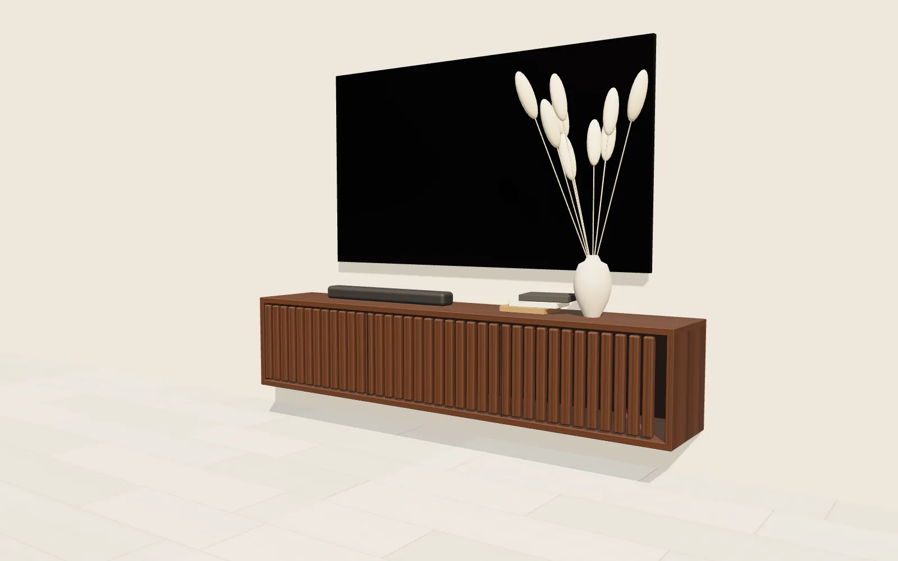
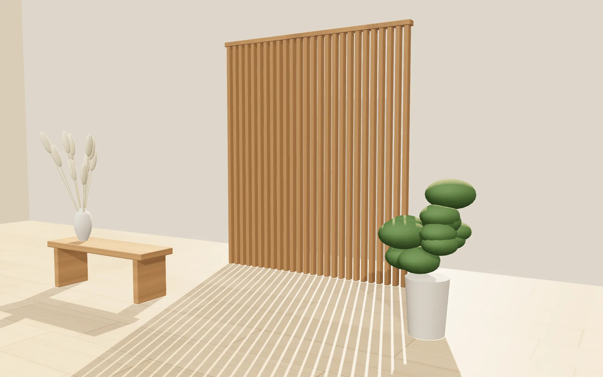
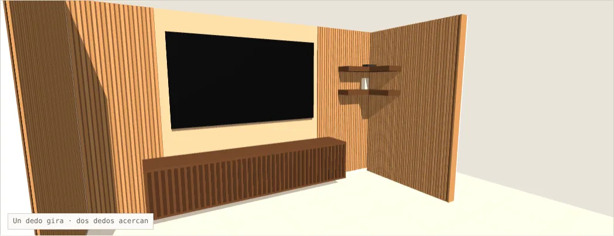
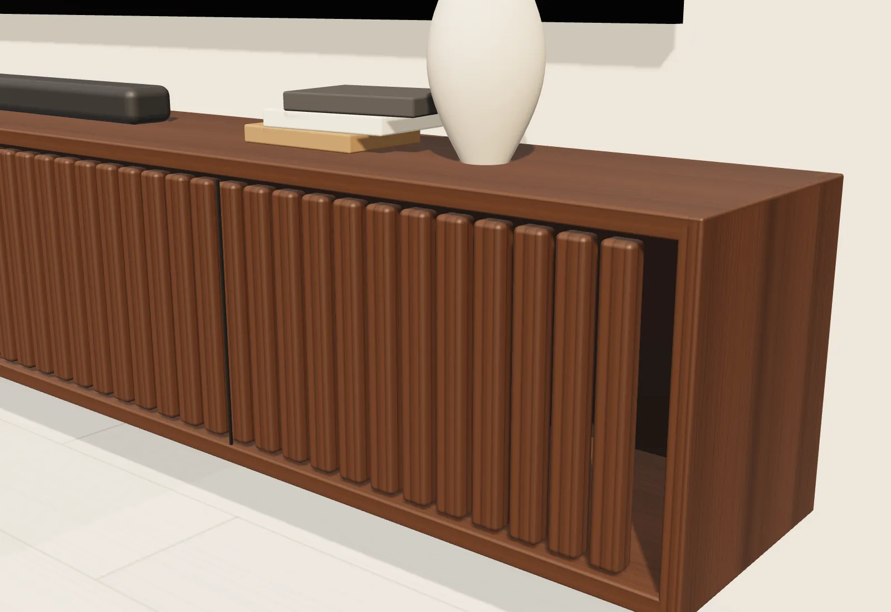
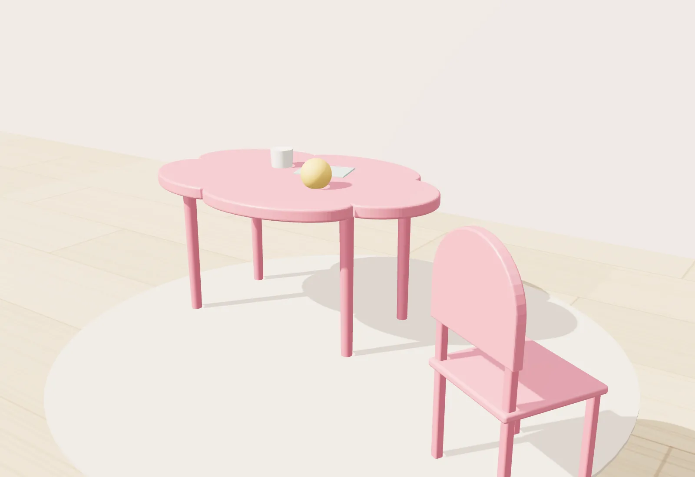
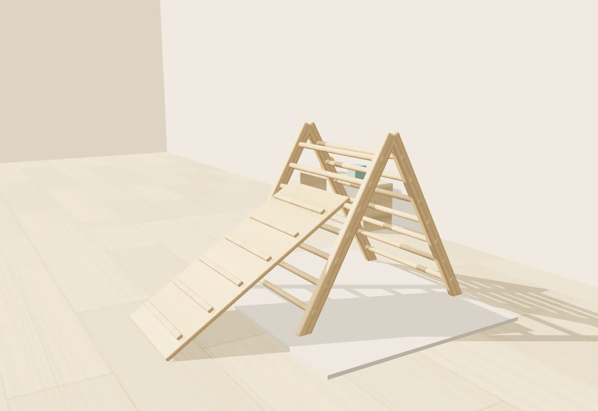

Render250 CM
Mueble de TV flotante
Volado sobre el muro, con frente de listones y cierre suave. Esconde cables y equipo sin perder ligereza.

Muebles a la medida, celosías y piezas infantiles. Antes de cortar la primera pieza, ves tu proyecto en 3D.
Somos un estudio que diseña cada pieza para el lugar donde va a vivir. Un carpintero y un arquitecto, trabajando por criterio y no por volumen.
Medimos el espacio, entendemos cómo se usa y proponemos antes de cotizar madera.
Ves el proyecto en 3D, con medidas y acabados, y lo apruebas antes de fabricar.
Elegimos trabajos donde la madera aporta. Cada pieza tiene que poder mostrarse.
La gente no busca un mueble, busca no equivocarse. Por eso cada proyecto pasa por cuatro pasos.
Medimos tu espacio y escuchamos lo que necesitas.
Te mandamos un enlace con tu proyecto en 3D, plano y presupuesto.
Con tu aprobación, construimos en el taller y te mostramos avances.
Montamos, revisamos juntos y te dejamos la guía de cuidados.


Cada listón alineado. Cada canto rematado. Cada medida verificada en obra.
Piezas que ya viven en casas de Hidalgo.

RenderVolado sobre el muro, con frente de listones y cierre suave. Esconde cables y equipo sin perder ligereza.
Separa sin cerrar. Deja pasar la luz y convierte el sol de la tarde en parte del diseño.

RenderA la altura de los niños, con cantos redondeados y laca resistente. Un juego hecho para crecer con ellos.

RenderTriángulo de escalada con rampa reversible. Movimiento libre, madera natural y uniones pensadas para durar.
Mándanos fotos y medidas aproximadas. Te respondemos con una propuesta y los siguientes pasos.